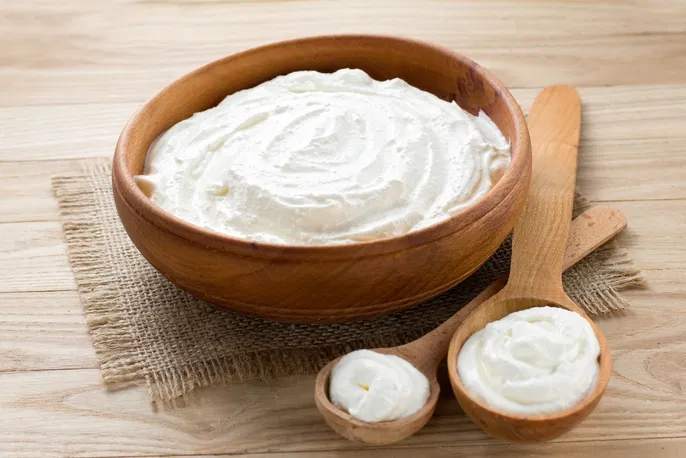
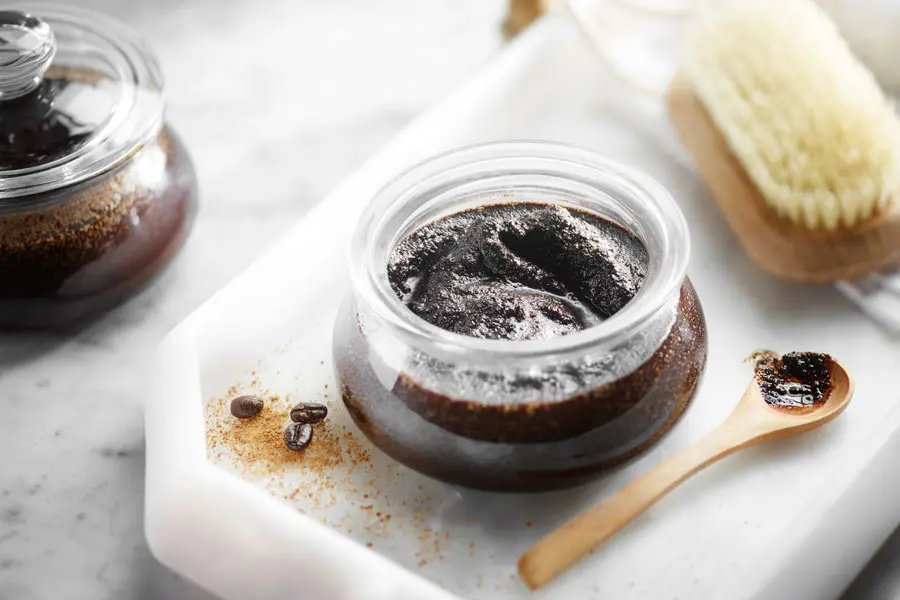
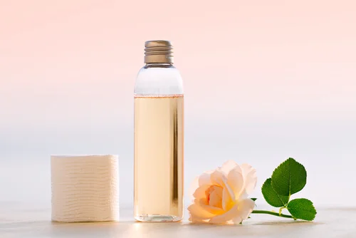
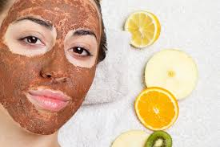

Cuidado Facial
| Producto | Tipo | Ingredientes | Precio |
|---|---|---|---|
| Crema Hidratante
 |
Hidratante | Aloe vera, aceite de coco | $1500 |
| Exfoliante Natural
 |
Exfoliante | Azúcar, miel, avena | $1200 |
| Tónico Facial
 |
Tónico | Agua de rosas, hamamelis | $1000 |
| Mascarilla Detox
 |
Mascarilla | Arcilla, barro nartural, aceite esencial de árbol de té | $1800 |